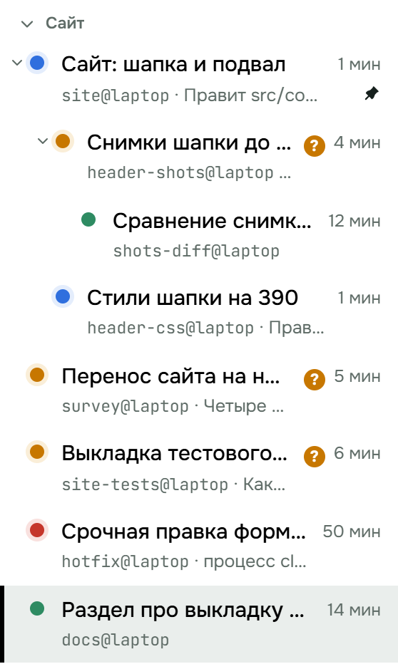
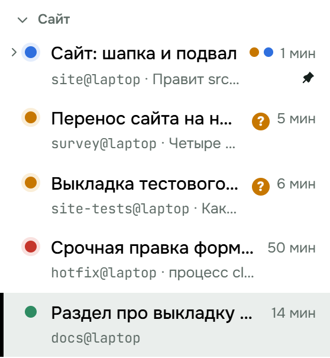
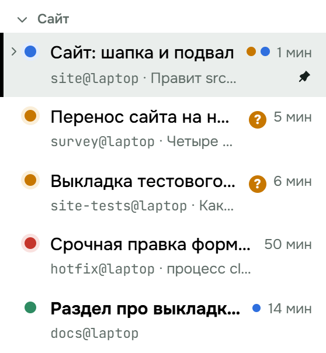
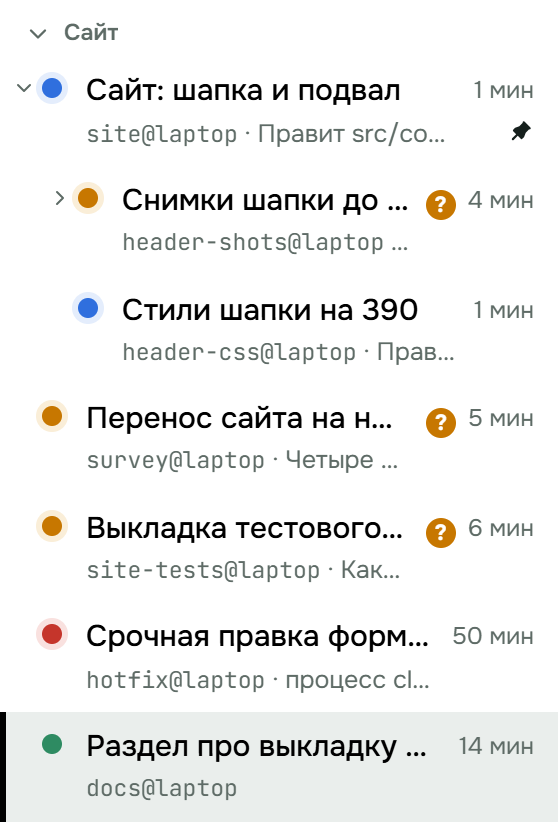
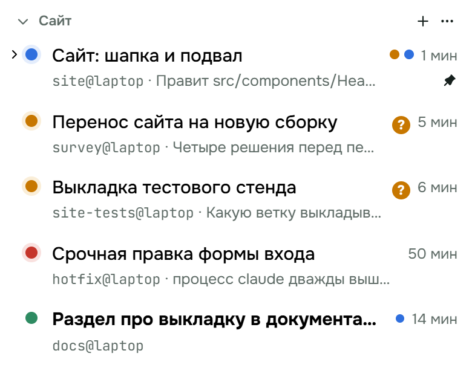

<title>Вложенные сессии сворачиваются</title>
<meta name="claude:viewport-fit-sides" content="cover">
<link rel="stylesheet" href="https://fonts.googleapis.com/css2?family=Inter:wght@400;500;600&family=Space+Grotesk:wght@500;600&family=JetBrains+Mono:wght@400;500&display=swap">
<style>
/* раскладка: сверху список до и после нажатия на шеврон — снимками с нажимаемыми частями; ниже круг «шеврон → устройство → правило дерева → список», экраны, эталоны картинками, развилки, гейт, порядок */
:root {
  --bg: #f6f5f1; --card: #ffffff; --fg: #1c211f; --muted: #66706b; --line: #d9d8d0; --soft: #eceae3;
  --accent: #1f7a63; --accent-soft: #dcefe8; --new: #b8590f; --new-soft: #fbe9d7; --code: #f0eee7; --chg: #fff3b0;
  --busy: #2f6fde; --wait: #cf7a00; --idle: #2e8b63; --fail: #cf3a34;
}
@media (prefers-color-scheme: dark) { :root:not([data-theme="light"]) {
  --bg: #151917; --card: #1d2320; --fg: #e8ece9; --muted: #98a39d; --line: #343c38; --soft: #252c28;
  --accent: #5fc3a6; --accent-soft: #1d3a31; --new: #f0a25c; --new-soft: #40291a; --code: #232a26; --chg: #4a4318;
  --busy: #6f9cf5; --wait: #f0b040; --idle: #58c493; --fail: #ef8a80; color-scheme: dark } }
:root[data-theme="dark"] {
  --bg: #151917; --card: #1d2320; --fg: #e8ece9; --muted: #98a39d; --line: #343c38; --soft: #252c28;
  --accent: #5fc3a6; --accent-soft: #1d3a31; --new: #f0a25c; --new-soft: #40291a; --code: #232a26; --chg: #4a4318;
  --busy: #6f9cf5; --wait: #f0b040; --idle: #58c493; --fail: #ef8a80; color-scheme: dark }
body { background: var(--bg); color: var(--fg); font: 15px/1.5 Inter, system-ui, sans-serif; padding-left: max(16px, env(safe-area-inset-left, 0px)); padding-right: max(16px, env(safe-area-inset-right, 0px)); padding-block: 28px 64px; }
main { max-width: 1040px; margin: 0 auto; display: flex; flex-direction: column; gap: 36px; }
h1, h2 { font-family: "Space Grotesk", Inter, sans-serif; text-wrap: balance; margin: 0; }
h1 { font-size: 34px; line-height: 1.1; }
h2 { font-size: 21px; }
.lead { color: var(--muted); max-width: 62ch; margin: 8px 0 0; }
section { display: flex; flex-direction: column; gap: 14px; border-radius: 14px; }
section.read > h2::after { content: " ✓ прочитал"; font: 500 12px Inter, sans-serif; color: var(--accent); }
.card { background: var(--card); border: 1px solid var(--line); border-radius: 14px; padding: 16px; min-width: 0; }
.chg { background: var(--chg); border-radius: 4px; }
.say { border-left: 3px solid var(--accent); background: var(--soft); border-radius: 0 10px 10px 0; padding: 10px 14px; min-height: 44px; }
.say b { font-weight: 600; }
.say pre { margin: 8px 0 0; }
pre { font: 12.5px/1.45 "JetBrains Mono", ui-monospace, monospace; background: var(--code); border-radius: 8px; padding: 10px 12px; overflow-x: auto; margin: 0; }
code { font: 12.5px "JetBrains Mono", ui-monospace, monospace; background: var(--code); border-radius: 4px; padding: 1px 5px; }

/* список до и после: два снимка и стрелка нажатия между ними */
.pairshot { display: grid; grid-template-columns: minmax(0, 279px) 64px minmax(0, 279px); gap: 14px; align-items: start; justify-content: center; }
.pairshot .press { align-self: center; text-align: center; color: var(--new); font: 500 12px Inter, sans-serif; }
.pairshot .press svg { display: block; margin: 0 auto 2px; }
.pairshot .press path { stroke: var(--new); stroke-width: 2; fill: none; }
@media (max-width: 700px) { .pairshot { grid-template-columns: minmax(0, 279px); } .pairshot .press svg { transform: rotate(90deg); } }
.anat-in { position: relative; }
.anat-in img { display: block; width: 100%; border-radius: 8px; border: 1px solid var(--line); }
.cap { font-size: 12.5px; color: var(--muted); margin-top: 6px; }
.hot { position: absolute; border: 2px solid var(--new); border-radius: 7px; background: none; padding: 0; cursor: pointer; opacity: 0.55; }
.hot:hover, .hot:focus-visible, .hot.on { opacity: 1; background: color-mix(in srgb, var(--new) 14%, transparent); outline: none; }

.dia { overflow-x: auto; }
.dia svg { display: block; min-width: 700px; width: 100%; height: auto; }
.dia text { font: 500 13px Inter, sans-serif; fill: var(--fg); }
.dia text.s { font-size: 11.5px; fill: var(--muted); font-weight: 400; }
.n rect { fill: var(--card); stroke: var(--line); stroke-width: 1.5; }
.n.dev rect { fill: var(--new-soft); stroke: var(--new); }
.n.rule rect { fill: var(--accent-soft); stroke: var(--accent); }
.a path { stroke: var(--muted); stroke-width: 1.8; fill: none; }
.a.press path { stroke: var(--new); }
.a.press text { fill: var(--new); }
.dia .head { fill: var(--muted); }
.dia .head.press { fill: var(--new); }
[data-i] { cursor: pointer; }
svg [data-i]:hover rect, svg [data-i].on rect { stroke-width: 2.8; }
svg [data-i]:hover path, svg [data-i].on path { stroke-width: 3.2; }
svg [data-i]:focus-visible { outline: 2px solid var(--accent); outline-offset: 2px; }

.grid { display: grid; grid-template-columns: repeat(auto-fit, minmax(210px, 1fr)); gap: 12px; }
.tile b { display: block; font: 600 26px "Space Grotesk", sans-serif; font-variant-numeric: tabular-nums; }
.tile span { color: var(--muted); font-size: 13px; }
.shots { display: grid; grid-template-columns: repeat(auto-fit, minmax(220px, 1fr)); gap: 16px; align-items: start; }
figure { margin: 0; min-width: 0; }
figure img { width: 100%; max-width: 300px; border: 1px solid var(--line); border-radius: 10px; display: block; }
figure.ph img { max-width: 390px; }
figcaption { font-size: 12.5px; color: var(--muted); margin-top: 6px; }

/* эталоны: маленькое дерево на входе → строки списка на выходе */
.ets { display: grid; grid-template-columns: repeat(auto-fit, minmax(300px, 1fr)); gap: 12px; }
.et { display: flex; flex-direction: column; gap: 10px; }
.et h3 { font: 600 14px Inter, sans-serif; margin: 0; }
.et .io { display: grid; grid-template-columns: minmax(0, 1fr) 20px minmax(0, 1fr); gap: 8px; align-items: center; }
.et .ar { text-align: center; color: var(--muted); }
.et small { color: var(--muted); font-size: 11.5px; }
.mini { display: flex; flex-direction: column; gap: 4px; font: 12px/1.3 "JetBrains Mono", ui-monospace, monospace; background: var(--soft); border-radius: 8px; padding: 8px; min-width: 0; }
.mini.out { background: var(--accent-soft); }
.mini .r { display: flex; align-items: center; gap: 5px; padding-left: calc(var(--d, 0) * 13px); white-space: nowrap; }
.mini .r.sel { outline: 2px solid var(--fg); outline-offset: 1px; border-radius: 4px; }
.mini .c { width: 9px; color: var(--muted); flex: none; text-align: center; }
.mini .k { margin-left: auto; display: inline-flex; gap: 3px; }
.mini .set { color: var(--new); border-top: 1px dashed var(--line); padding-top: 4px; margin-top: 2px; white-space: normal; }
.dot { width: 8px; height: 8px; border-radius: 50%; flex: none; display: inline-block; background: var(--idle); }
.dot.busy { background: var(--busy); } .dot.wait { background: var(--wait); } .dot.fail { background: var(--fail); }

.forks { display: flex; flex-direction: column; gap: 12px; }
.fork { display: grid; grid-template-columns: repeat(auto-fit, minmax(240px, 1fr)); gap: 12px; }
.fork .opt { border: 1.5px solid var(--line); border-radius: 12px; padding: 12px 14px; background: var(--card); min-width: 0; }
.fork .opt.rec { border-color: var(--accent); background: var(--accent-soft); }
.fork .opt b { display: block; margin-bottom: 4px; }
.fork .opt span { font-size: 13px; color: var(--muted); }
.gate { font: 12.5px/1.6 "JetBrains Mono", ui-monospace, monospace; white-space: pre-wrap; overflow-wrap: anywhere; }
ol.steps { list-style: none; counter-reset: st; margin: 0; padding: 0; display: flex; flex-direction: column; gap: 10px; }
ol.steps li { counter-increment: st; display: grid; grid-template-columns: 30px minmax(0, 1fr); gap: 4px 10px; }
ol.steps li::before { content: counter(st); grid-row: span 2; width: 28px; height: 28px; border-radius: 50%; background: var(--accent-soft); color: var(--accent); font: 600 13px "Space Grotesk", sans-serif; display: grid; place-items: center; }
ol.steps .done { font-size: 13px; color: var(--muted); }
ol.steps .done b { color: var(--accent); font-weight: 600; }
</style>

<main>
<header>
  <h1>Вложенные сессии сворачиваются</h1>
  <p class="lead">Сессия, которая открыла помощников, получает в списке шеврон. Нажатие прячет всех, кого она открыла, в её строку; что у них происходит, видно лампами. Нажмите на рамку на снимке.</p>
</header>

<section id="b-list" data-block>
  <h2>Список до и после нажатия</h2>
  <div class="card">
    <div class="pairshot">
      <div>
        <div class="anat-in">
          
          <button class="hot" data-i="chev" style="left:0.5%;top:7.3%;width:7%;height:4.6%" aria-label="Шеврон родителя"></button>
          <button class="hot" data-i="kids" style="left:20%;top:17.5%;width:79%;height:34.5%" aria-label="Дочерние сессии"></button>
          <button class="hot" data-i="mid" style="left:8%;top:19.3%;width:6.5%;height:4.6%" aria-label="Шеврон в середине дерева"></button>
          <button class="hot" data-i="plain" style="left:5%;top:54.5%;width:10%;height:5%" aria-label="Строка без дочерних"></button>
        </div>
        <div class="cap">Раскрыто — так список открывается</div>
      </div>
      <div class="press"><svg width="56" height="20" viewBox="0 0 56 20" aria-hidden="true"><path d="M2 10h48m-8-7 8 7-8 7"/></svg>шеврон</div>
      <div>
        <div class="anat-in">
          
          <button class="hot" data-i="shut" style="left:0.5%;top:11.4%;width:7%;height:7%" aria-label="Шеврон свёрнутого родителя"></button>
          <button class="hot" data-i="lamps" style="left:73.5%;top:11.4%;width:10.5%;height:7%" aria-label="Лампы спрятанных сессий"></button>
        </div>
        <div class="cap">Свёрнуто — три строки ушли в одну</div>
      </div>
    </div>
  </div>
  <div class="say" aria-live="polite"><b>Шеврон у родителя.</b> Стоит только у сессии, которая открыла другие. Нажатие мышью или пальцем прячет всех её потомков и не открывает саму сессию.</div>
  <div class="grid">
    <div class="card tile"><b>4 → 1</b><span>строки занимает сессия с тремя помощниками</span></div>
    <div class="card tile"><b>0</b><span>запросов к флоту: нажатие живёт на устройстве</span></div>
    <div class="card tile"><b>+6 px</b><span>слева у каждой строки — место шеврону; лампы на одной вертикали</span></div>
    <div class="card tile"><b>24 из 24</b><span>шагов сценария на живом прототипе: 1280 и 390, мышь и палец, две темы</span></div>
  </div>
</section>

<section id="b-how" data-block>
  <h2>Как это устроено</h2>
  <div class="card dia">
    <svg viewBox="0 0 760 250" role="img" aria-label="Круг: нажатие на шеврон в списке записывает сессию в свёрнутое на устройстве; правило дерева берёт картину флота и свёрнутое и отдаёт строки списку">
      <defs>
        <marker id="ah" viewBox="0 0 10 10" refX="9" refY="5" markerWidth="7" markerHeight="7" orient="auto-start-reverse"><path d="M0 0 10 5 0 10z" class="head"/></marker>
        <marker id="ahp" viewBox="0 0 10 10" refX="9" refY="5" markerWidth="7" markerHeight="7" orient="auto-start-reverse"><path d="M0 0 10 5 0 10z" class="head press"/></marker>
      </defs>
      <g class="n" data-i="d-fleet"><rect x="16" y="28" width="190" height="62" rx="10"/><text x="111" y="55" text-anchor="middle">Картина флота</text><text class="s" x="111" y="74" text-anchor="middle">кто кого открыл</text></g>
      <g class="n rule" data-i="d-rule"><rect x="286" y="28" width="190" height="62" rx="10"/><text x="381" y="55" text-anchor="middle">Правило дерева</text><text class="s" x="381" y="74" text-anchor="middle">одно место на странице</text></g>
      <g class="n" data-i="d-list"><rect x="556" y="28" width="190" height="62" rx="10"/><text x="651" y="55" text-anchor="middle">Список «Работы»</text><text class="s" x="651" y="74" text-anchor="middle">строки, шевроны, лампы</text></g>
      <g class="n dev" data-i="d-dev"><rect x="286" y="168" width="190" height="62" rx="10"/><text x="381" y="195" text-anchor="middle">Свёрнутое</text><text class="s" x="381" y="214" text-anchor="middle">помнит это устройство</text></g>
      <g class="a" data-i="a-fleet"><path d="M206 59H282" marker-end="url(#ah)"/><path d="M206 47H282V71H206z" stroke="none" fill="transparent" style="stroke:none"/></g>
      <g class="a" data-i="a-rows"><path d="M476 59H552" marker-end="url(#ah)"/><text class="s" x="514" y="48" text-anchor="middle">строки</text><path d="M476 40H552V72H476z" style="stroke:none" fill="transparent"/></g>
      <g class="a press" data-i="a-press"><path d="M651 90V199H480" marker-end="url(#ahp)"/><text class="s" x="566" y="190" text-anchor="middle">нажатие на шеврон</text><path d="M480 176H664V212H480z" style="stroke:none" fill="transparent"/></g>
      <g class="a" data-i="a-shut"><path d="M381 168V94" marker-end="url(#ah)"/><text class="s" x="391" y="136">что свёрнуто</text><path d="M366 94H480V168H366z" style="stroke:none" fill="transparent"/></g>
    </svg>
  </div>
  <div class="say" aria-live="polite"><b>Круг из четырёх шагов.</b> Нажатие меняет список свёрнутого на устройстве; правило дерева заново собирает строки. Флот об этом не узнаёт. Нажмите на блок или стрелку.</div>
</section>

<section id="b-screens" data-block>
  <h2>Три случая на живом прототипе</h2>
  <div class="shots">
    <figure><figcaption>Открыта спрятанная сессия — подсвечена строка её родителя; сам он не раскрывается</figcaption></figure>
    <figure><figcaption>Свёрнута середина дерева; спрятанная сессия свободна — ламп нет</figcaption></figure>
    <figure class="ph"><figcaption>Телефон: то же нажатие пальцем, цель 32 px во всю высоту строки</figcaption></figure>
  </div>
</section>

<section id="b-etalons" data-block>
  <h2>Эталоны</h2>
  <div class="ets">
    <div class="card et"><h3>Свернуть родителя</h3>
      <div class="io">
        <div class="mini"><span class="r"><span class="c">▾</span><i class="dot busy"></i>site</span><span class="r" style="--d:1"><span class="c">▾</span><i class="dot wait"></i>shots</span><span class="r" style="--d:2"><span class="c"></span><i class="dot"></i>diff</span><span class="r" style="--d:1"><span class="c"></span><i class="dot busy"></i>css</span><span class="set">свёрнуто: site</span></div>
        <div class="ar">→</div>
        <div class="mini out"><span class="r"><span class="c">▸</span><i class="dot busy"></i>site<span class="k"><i class="dot wait"></i><i class="dot busy"></i></span></span></div>
      </div><small>чьё: слово пользователя — «скрывать и раскрывать вложенные сессии»</small></div>
    <div class="card et"><h3>Раскрыть обратно</h3>
      <div class="io">
        <div class="mini"><span class="r"><span class="c">▸</span><i class="dot busy"></i>site<span class="k"><i class="dot wait"></i><i class="dot busy"></i></span></span><span class="set">свёрнуто: пусто</span></div>
        <div class="ar">→</div>
        <div class="mini out"><span class="r"><span class="c">▾</span><i class="dot busy"></i>site</span><span class="r" style="--d:1"><span class="c">▾</span><i class="dot wait"></i>shots</span><span class="r" style="--d:2"><span class="c"></span><i class="dot"></i>diff</span><span class="r" style="--d:1"><span class="c"></span><i class="dot busy"></i>css</span></div>
      </div><small>чьё: слово пользователя — «скрывать и раскрывать вложенные сессии»</small></div>
    <div class="card et"><h3>Середина дерева, спрятанная свободна</h3>
      <div class="io">
        <div class="mini"><span class="r"><span class="c">▾</span><i class="dot busy"></i>site</span><span class="r" style="--d:1"><span class="c">▾</span><i class="dot wait"></i>shots</span><span class="r" style="--d:2"><span class="c"></span><i class="dot"></i>diff</span><span class="r" style="--d:1"><span class="c"></span><i class="dot busy"></i>css</span><span class="set">свёрнуто: shots</span></div>
        <div class="ar">→</div>
        <div class="mini out"><span class="r"><span class="c">▾</span><i class="dot busy"></i>site</span><span class="r" style="--d:1"><span class="c">▸</span><i class="dot wait"></i>shots</span><span class="r" style="--d:1"><span class="c"></span><i class="dot busy"></i>css</span></div>
      </div><small>чьё: код — у свёрнутого проекта светятся только те, кто работает, ждёт или упал</small></div>
    <div class="card et"><h3>Открыта спрятанная сессия</h3>
      <div class="io">
        <div class="mini"><span class="r"><span class="c">▸</span><i class="dot busy"></i>site</span><span class="set">свёрнуто: site · открыт разговор diff</span></div>
        <div class="ar">→</div>
        <div class="mini out"><span class="r sel"><span class="c">▸</span><i class="dot busy"></i>site<span class="k"><i class="dot wait"></i><i class="dot busy"></i></span></span></div>
      </div><small>чьё: код — так же сессия-напарник стоит в строке своей ведущей</small></div>
    <div class="card et"><h3>Дерево выключено в «Виде списка»</h3>
      <div class="io">
        <div class="mini"><span class="r"><span class="c">▸</span><i class="dot busy"></i>site</span><span class="set">свёрнуто: site · «дочерние под родителем» выключено</span></div>
        <div class="ar">→</div>
        <div class="mini out"><span class="r"><span class="c"></span><i class="dot busy"></i>site</span><span class="r"><span class="c"></span><i class="dot wait"></i>shots</span><span class="r"><span class="c"></span><i class="dot"></i>diff</span><span class="r"><span class="c"></span><i class="dot busy"></i>css</span></div>
      </div><small>чьё: код — без дерева все сессии стоят своими строками</small></div>
  </div>
</section>

<section id="b-forks" data-block>
  <h2>Развилки</h2>
  <div class="forks">
    <div class="fork">
      <div class="opt rec"><b>Свёрнутое помнит устройство — рекомендую</b><span>Там же, где уже лежат свёрнутые проекты. Телефон и пульт сворачивают каждый по-своему. Запросов нет. Не скажете иначе — так.</span></div>
      <div class="opt"><b>Свёрнутое помнит человек</b><span>Одинаково на всех устройствах. Каждое нажатие — запись в настройки на флоте; свёрнутые проекты тогда переезжают туда же.</span></div>
    </div>
    <div class="fork">
      <div class="opt rec"><b>Новая дочерняя видна сразу — рекомендую</b><span>Родитель раскрыт, пока его не свернули, — как сейчас. Не скажете иначе — так.</span></div>
      <div class="opt"><b>Родители свёрнуты с самого начала</b><span>Список короче, но появление помощника видно только лампой в строке родителя.</span></div>
    </div>
  </div>
</section>

<section id="b-gate" data-block>
  <h2>Гейт</h2>
  <div class="card gate">Гейт: дубликаты ответственности 0 → 0 · состояния 0 → 0 · логики 1 → 0 · смысла 0 → 0 · других 0 → 0 · лишние коммуникации 0 → 0 · циклы 0 → 0
Числа: запросы и кадры флота — новых 0 · настройки устройства у списка 8 → 8 · правила списка 11 → 13 · поля строки дерева 3 → 5 · эталоны +5 · модули, каналы, секреты — без изменений
Работа: маленькая — внутри страницы, договор с флотом тот же
Сделано:
  1. Юнификация · свёрнутое · сессии-родители лежат в том же списке устройства, что свёрнутые проекты и машины; переключатель один · выигрыш: вторых списков 0, новых настроек 0
  2. Дубликат логики · «в какой строке стоит открытая сессия» считалось дважды: для клавиш j/k и для подсветки строки · одно правило: своя строка, строка ведущей или строка свёрнутого родителя · выигрыш: 2 места → 1
  3. Дубликат логики, не допущен · «что светится у свёрнутого» · одно правило и для проекта, и для родителя · выигрыш: 1 место вместо 2
  4. YAGNI · раскрытие родителя самой страницей, счётчик спрятанных, клавиши ← и → · не делаются: ждущую дочернюю показывает лампа в строке родителя
Развилки пользователю:
  1. Где помнить свёрнутое · рекомендую: на устройстве · иначе: в настройках человека · не скажете иначе — на устройстве
  2. С чего начинает родитель · рекомендую: раскрыт · иначе: свёрнут · не скажете иначе — раскрыт
Не трогал как редакторское: подпись «Дочерние под родителем» в «Виде списка»</div>
</section>

<section id="b-order" data-block>
  <h2>Порядок реализации</h2>
  <ol class="steps">
    <li><div>Правило дерева: свёрнутые строки прячут потомков; «что светится у свёрнутого» и «в какой строке стоит сессия» — по одному правилу; пять эталонов этой страницы тестами.</div>
      <div class="done"><b>Готово:</b> <code>node tools/test/run.mjs web</code> зелёный; новых эталонов 5; мест, где считается строка открытой сессии, 2 → 1.</div></li>
    <li><div>Список: шеврон у родителя, лампы спрятанных, подсветка строки родителя, j и k по видимым строкам; в подделке флота — сессии с дочерними.</div>
      <div class="done"><b>Готово:</b> <code>node docs/designs/v2-nested/shots.mjs</code> — 24 из 24 на 1280 и 390, мышью и пальцем.</div></li>
    <li><div>Слияние в основную ветку; на тестовый флот выкладывает CI.</div>
      <div class="done"><b>Готово:</b> CI зелёный; на тестовом флоте сессия с дочерней сворачивается и после перезагрузки страницы остаётся свёрнутой — 1 живой снимок.</div></li>
  </ol>
</section>
</main>

<script>
// пояснения частей: нажатие на рамку снимка, блок или стрелку диаграммы
(() => {
  const J = (o) => "<pre>" + JSON.stringify(o, null, 2).replace(/</g, "&lt;") + "</pre>";
  const SAY = {
    chev: ["Шеврон у родителя.", "Стоит только у сессии, которая открыла другие. Нажатие мышью или пальцем прячет всех её потомков и не открывает саму сессию."],
    kids: ["Дочерние сессии.", "Стоят под той, кто их открыл, с отступом — это уже есть. Новое — их можно спрятать в строку родителя."],
    mid: ["Шеврон в середине дерева.", "Дочерняя, у которой есть свои дочерние, сворачивается отдельно. Свёрнут верхний родитель — спрятаны все уровни под ним."],
    plain: ["Строка без дочерних.", "Шеврона нет. Лампа стоит на той же вертикали, что у родителя: шеврон занимает поле слева и строки не сдвигает."],
    shut: ["Свёрнутый родитель.", "Шеврон смотрит вправо. Нажатие возвращает строки. Выбор остаётся после перезагрузки страницы."],
    lamps: ["Лампы спрятанных.", "По лампе на каждую спрятанную сессию, которая работает, ждёт вас или упала. Свободные и остановленные не светятся. Так же светит свёрнутый проект."],
    "d-fleet": ["Картина флота.", "У каждой сессии записано, кто её открыл: человек или другая сессия. Из этого страница уже строит отступы. Новых данных от флота не нужно."],
    "d-rule": ["Правило дерева.", "Одно место на странице решает, какие строки стоят в списке и под кем. Теперь оно же прячет потомков свёрнутой строки и отдаёт их родителю — для ламп и подсветки."],
    "d-list": ["Список «Работы».", "Рисует то, что отдало правило: строку, шеврон у родителя, лампы спрятанных. Сам ничего не решает."],
    "d-dev": ["Свёрнутое.", "Один список на устройстве: свёрнутые проекты, машины и сессии-родители. Проекты и машины в нём уже лежат." + J(["site", "@server", "site@laptop"])],
    "a-fleet": ["Кто кого открыл.", "Картина флота приходит на страницу как раньше; правило дерева читает из неё, кто открыл сессию."],
    "a-rows": ["Строки.", "Правило отдаёт списку строки по порядку. У свёрнутого родителя — спрятанные потомки при нём." + J({ session: "site@laptop", depth: 0, kids: true, folded: ["header-shots@laptop", "shots-diff@laptop", "header-css@laptop"] })],
    "a-press": ["Нажатие на шеврон.", "Добавляет сессию в свёрнутое или убирает из него. Запроса к флоту нет."],
    "a-shut": ["Что свёрнуто.", "Правило дерева читает список с устройства при каждой сборке строк. Сессии из списка, которой во флоте уже нет, оно просто не встречает."],
  };
  const show = (el) => {
    const sec = el.closest("section");
    const [title, body] = SAY[el.dataset.i];
    for (const x of sec.querySelectorAll("[data-i].on")) x.classList.remove("on");
    el.classList.add("on");
    sec.querySelector(".say").innerHTML = "<b>" + title + "</b> " + body;
  };
  for (const el of document.querySelectorAll("[data-i]")) {
    el.addEventListener("click", () => show(el));
    if (el.tagName !== "BUTTON") { el.setAttribute("tabindex", "0"); el.setAttribute("role", "button"); el.addEventListener("keydown", (e) => e.key === "Enter" && show(el)); }
  }
})();
</script>
<script>
// метки «прочитал»: клавиша A (латинская или русская) над блоком
(() => {
  const KEY = "v2-nested.read";
  let read = [];
  try { read = JSON.parse(localStorage.getItem(KEY) ?? "[]"); } catch {}
  let over = null;
  const draw = () => { for (const s of document.querySelectorAll("[data-block]")) s.classList.toggle("read", read.includes(s.id)); };
  for (const s of document.querySelectorAll("[data-block]")) s.addEventListener("mouseenter", () => (over = s));
  document.addEventListener("keydown", (e) => {
    if (!(e.code === "KeyA" || e.key === "a" || e.key === "A" || e.key === "ф" || e.key === "Ф") || e.ctrlKey || e.metaKey || e.altKey || !over) return;
    read = read.includes(over.id) ? read.filter((x) => x !== over.id) : [...read, over.id];
    try { localStorage.setItem(KEY, JSON.stringify(read)); } catch {}
    draw();
  });
  draw();
})();
</script>
